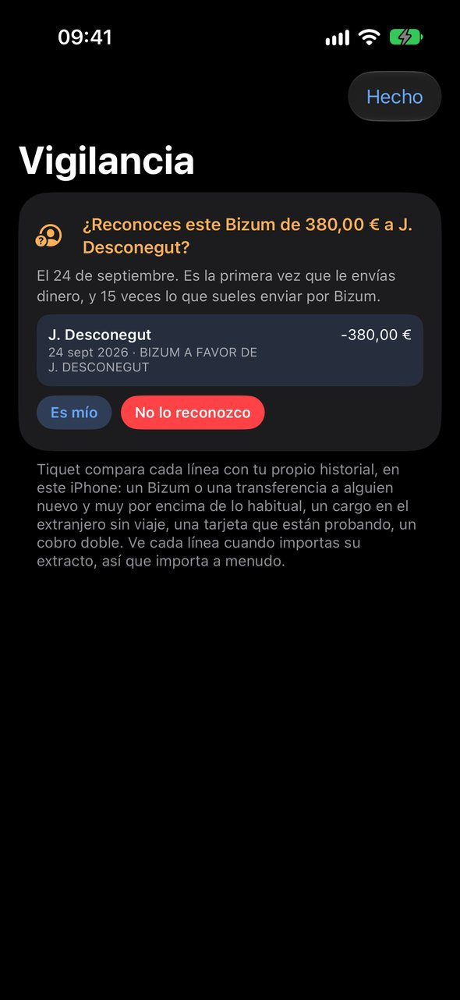

Primeros pasos
Tiquet guarda lo que tu casa tiene contratado, lo que paga y lo que caduca, y te avisa antes de que un plazo te cueste dinero. No necesitas cuenta ni conectar el banco: te basta con tus papeles.
Cómo se hace
- Necesitas un iPhone o un iPad con iOS o iPadOS 27. La app está en español y en inglés.
- Para verla llena antes de meter nada tuyo, toca «Probar con datos de ejemplo» en el Inicio vacío o en «Ajustes». Es una casa inventada que no toca tus datos; vuelves con «Salir».
- Empieza por lo que más te importa: un seguro o una suscripción, desde «Añadir» › «Contrato».
- Después, el tique de algo con garantía o plazo de devolución, y un extracto de tu banco para que Tiquet encuentre lo que se repite.
- Si vienes de otro iPhone, «Restaurar una copia» en el Inicio vacío trae tu copia de seguridad.
Trucos
- Apple Intelligence es opcional. Sin él, Tiquet lee los tiques con reconocimiento de texto y reglas, te los deja marcados para revisar, y «Pregunta» sigue respondiendo cuánto se fue en qué.
- Con Apple Intelligence, el modelo de Apple lee mejor tiques y pólizas y responde preguntas abiertas, siempre en el dispositivo.
Preguntas
¿Tengo que crear una cuenta?
No. No hay cuenta de Tiquet ni contraseña que recordar.

Tiques, facturas y PDF
Haz una foto al tique o mándale la factura que te llegó por correo, y Tiquet apunta la tienda, el día, el importe y los artículos. La foto se queda como prueba aunque el papel térmico se borre.
Cómo se hace
- Toca «Añadir» y elige: «Cámara» escanea y endereza el papel, con varias páginas si el tique es largo; «Fotos» admite hasta 30 a la vez; «Archivo» abre un PDF o una imagen; «A mano», cuando no hay papel.
- Desde Mail, Archivos o Fotos, mantén pulsado el adjunto, toca Compartir y elige Tiquet. Al abrir la app, lo lee.
- Antes de guardar ves lo que ha entendido. Si algo no cuadra, toca «¿Algo mal leído? Corrígelo».
- Lo que llega en lote o se leyó sin Apple Intelligence lleva el aviso «Guardado sin que lo revisaras». Compáralo con la foto y toca «Está bien».
Trucos
- Puedes compartir hasta 20 archivos de una vez. Desde la versión 1.1 se leen en el orden en que los mandas.
- Desde la 1.1, el tique de una tienda tiene «Web de la tienda, para su icono». Lo escribes una vez y todos sus tiques y cargos llevan el icono.
- Si guardas a mano un tique repetido (misma tienda, día e importe), Tiquet te pregunta antes.
- Para Apple Pay en tienda, crea en Atajos una automatización de Cartera con la acción «Registrar un pago».
Devoluciones y garantías
Cuando algo se rompe o no te convence, lo difícil es saber si aún estás a tiempo. Tiquet saca los plazos de devolución y de garantía del tique y te avisa antes de que se cierren.
Cómo se hace
- Guarda el tique de la compra. En su ficha, «Tus derechos» te dice hasta cuándo dura la garantía legal y hasta cuándo puedes devolverlo.
- La devolución sale del tique o, si no la imprime, de la política de las grandes cadenas. Comprado online, la ley te da 14 días desde la entrega.
- Para algo que quieras seguir, como un móvil o una bici, toca «Registrar como cosa». Si el tique trae varias líneas, desliza una para registrar solo ese artículo.
- Las garantías vigentes están juntas en «Contratos», en «Garantías en vigor», la más próxima arriba.
Trucos
- Te avisa 3 días y 1 día antes de que se cierre una devolución, y un mes antes de que acabe la garantía de una cosa.
- En España la garantía legal es de 3 años para lo comprado desde 2022. Reclama al vendedor, no solo al fabricante.
- «Tus derechos, con sus fuentes» dice de dónde sale cada fecha. Es información, no asesoramiento jurídico.
Preguntas
¿Por qué el tique del súper no tiene garantía?
Tiquet solo pone garantía cuando el papel la menciona y lo comprado puede tenerla: nunca a la comida, a la gasolina ni a una comida fuera.
Extractos del banco
Tiquet no se conecta a tu banco. Tú descargas los movimientos como archivo y se los das, y con eso ve lo que pagas cada mes, lo que llevas pagado a cada empresa y lo que se repite.
Cómo se hace
- En la web o la app de tu banco, exporta los movimientos en Excel o CSV, no en PDF: hace falta una fecha, un concepto y un importe. Si usas tarjeta de crédito, exporta también su extracto.
- Ábrelo con «Añadir» › «Archivo», o compártelo con Tiquet.
- Te dice cuántas líneas son nuevas; nada se añade dos veces. Si el archivo no trae el año, te pide el «Año del último pago».
- En «Lo que se sigue cobrando» salen las empresas que te cobran a ritmo constante. Las que actives pasan a ser contratos.
Trucos
- Transferencias, Bizum y efectivo se guardan, pero no cuentan como gasto. Los números de tarjeta se recortan a sus cuatro últimas cifras.
- Desde la 1.1 puedes mandar varios extractos juntos y se importan uno tras otro. En la 1.0, de uno en uno.
- Con «Recordarme lo que solo puedo hacer yo», en «Ajustes» › «Avisos», el día 3 te recuerda traer el mes anterior si te falta.
- Con Plus: «Entra y sale» compara lo que entra con lo que sale.
Preguntas
¿Qué bancos sirven?
Los que exportan una columna de fecha, una de concepto y una de importe; BBVA y Banc Sabadell se entienden en detalle. Si tu banco separa cargos y abonos en dos columnas, o solo te da PDF, puede que aún no se lea bien: escríbenos con el nombre del banco, sin mandarnos el archivo.
Contratos y seguros
Cada seguro, suscripción o recibo de casa como una ficha: lo que cuesta, lo que llevas pagado, cuándo renueva, hasta cuándo puedes darlo de baja y a quién llamar el día que pasa algo.
Cómo se hace
- Toca «Añadir» › «Contrato», o el + de la pestaña «Contratos». Escribe con quién es y cuánto cuesta.
- Toca «Adjuntar la póliza o el contrato» y escanea el papel o elige una foto o un PDF. Tiquet lee número, prima, cobertura, asegurados y teléfono de siniestros, y solo rellena lo que no habías escrito.
- Con extractos importados, mira «En tu banco, aún sin ficha» en «Contratos»: un toque crea la ficha de un cargo que se repite.
- Para un móvil a plazos, pon el «Número de pagos». Para una prueba gratis, activa «Prueba gratis» y elige cuándo «Empieza a cobrar».
Trucos
- Un seguro trae 30 días de preaviso: en España puedes oponerte a la renovación con un mes de antelación. Cámbialo si tu contrato dice otra cosa.
- En un contrato anual, un mes antes del último día para decir que no te llega «buen momento para comparar», con la subida si tu banco la muestra. Después, avisos 7 días y 1 día antes.
- «Llamar para dar un parte» y «Copiar el número de póliza» están arriba en la ficha.
- Tiquet nunca guarda contraseñas: solo apuntas dónde está el acceso.

Dónde gastar menos
Las subidas no avisan: el seguro que cada año cuesta un poco más, la suscripción que ya no usas. Tiquet pone tus propios números uno al lado del otro y te dice qué pregunta hacer.
Cómo se hace
- Importa extractos de al menos un año: una subida se ve comparando el mismo cargo en años distintos.
- En el «Inicio», abre la tarjeta «Dónde gastar menos».
- Cada hallazgo dice qué se ha visto, por qué puede importar, qué podrías hacer y cuánto dinero pasa por ahí al año, como estimación.
- Toca «Ver los cargos» para ver cada pago que hay detrás, año a año. Cuando lo hayas revisado, toca «Ya lo he mirado».
Trucos
- Busca seis cosas: un contrato que ha subido, una protección que ya ha costado mucho frente a lo que protege, una garantía de pago mientras dura la legal, comisiones del banco, suscripciones de más de un año y peajes o aparcamientos muy frecuentes.
- Tiquet nunca recomienda una compañía, una cobertura ni una baja. No conoce precios de mercado: te da tus cifras y la pregunta.
- La subida de un contrato también se ve gratis en su ficha, en «Precio de cada cargo, año a año».
- Desde la 1.1, «La cesta» hace lo mismo con los precios del súper.
Si me pasa algo
Si mañana no estás para explicarlo, ¿sabe tu pareja qué seguros tenéis, con quién y a qué número llamar? Tiquet prepara esos papeles ahora, mientras todo va bien.
Cómo se hace
- En «Contratos», toca «Compartir» arriba, o ve a «Ajustes» › «Compartir con los de casa».
- Elige «Hoja de casa (PDF)» o «Hoja de casa, con precios». Se hace en el dispositivo.
- Imprímela o envíasela a alguien de confianza, y guárdala donde la puedan encontrar.
- Para que tu pareja tenga lo mismo en su Tiquet, toca «Compartir con los de casa» y mándale el archivo de casa por AirDrop. Al abrirlo, su Tiquet añade lo que falta y actualiza lo que cambiaste después.
Trucos
- La hoja lleva cada seguro y contrato: compañía, número de póliza, quién está asegurado, qué cubre, el teléfono para dar un parte, el contacto, dónde se guarda el acceso, cuándo renueva y si la póliza está en Tiquet. Luego, lo que está en garantía y los documentos que caducan.
- Nunca lleva contraseñas ni el número de tus documentos. Los precios, solo en la versión con precios.
- El archivo de casa trae contratos, seguros con sus pólizas y garantías: ni tiques ni banco. No está cifrado y no se actualiza solo, así que vuelve a mandarlo cuando cambies algo.
Vigilancia: ¿algo raro?
Un Bizum que no hiciste o un cobro doble se ven mejor con la historia de tu casa al lado. Vigilancia compara cada movimiento de tus extractos con lo que sueles hacer y te pregunta si lo reconoces.
Cómo se hace
- Importa tus extractos. Vigilancia revisa los últimos 120 días en el dispositivo, con reglas y sin IA.
- Lo que encuentre sale en la tarjeta «Vigilancia» del «Inicio» y encabeza «Requiere atención». La pantalla completa está en «De tu banco» › «Vigilancia: ¿algo raro?».
- Si lo reconoces, toca «Es mío» y Tiquet lo aprende en todos tus dispositivos. Para varios a la vez, «Todos son míos».
- Con «No lo reconozco», te dice qué hacer: llamar al banco y bloquear la tarjeta, pedir que te lo devuelvan, denunciarlo y cambiar la contraseña.
Trucos
- Seis señales: un Bizum alto a alguien nuevo; varios Bizum el mismo día a gente nueva; una transferencia a una cuenta nunca vista; un cargo en otra moneda sin viaje alrededor; un cargo mínimo en internet seguido de otro mayor; y un cobro doble.
- Para un pago que no autorizaste tienes hasta 13 meses para avisar al banco, pero cuanto antes, mejor.
- Tiquet no contacta con nadie, ni con tu banco.
Preguntas
¿Me avisa en cuanto pasa algo?
No. Solo ve un movimiento cuando importas su extracto, así que siempre llega después. Complementa las alertas de tu banco, no las sustituye.

Sitios: restaurantes y bares
Tus tiques de restaurante se convierten en tu propio mapa: dónde comisteis, qué pedisteis, qué os encantó y a qué sitio volver. Sin escribir reseñas: el tique ya dice el plato y el precio.
Cómo se hace
- Guarda el tique de un restaurante o un bar y va a «Sitios», a la ficha de su sitio. «Estoy aquí ahora» lo sitúa en el mapa con tu posición.
- En el tique, pon estrellas en «El sitio» (valen para todas las visitas) y abre cada plato de «Lo que pedisteis» para responder «¿Lo pedirías otra vez?» y añadir «Fotos del plato».
- El «Resumen» de «Sitios» enseña «Vuestros habituales», los «Viajes» que detecta solo y lo que tienes «Cerca de casa».
- Cada sitio reúne sus visitas, lo que ha costado, los platos «Para volver a pedir», su teléfono, «Reservar o ver la carta» y «Abrir en Mapas».
- Con Plus, «Traerlos a Sitios» trae los restaurantes de tus extractos y los busca en Apple Maps.
Trucos
- Pregunta por una ciudad o una región: «¿Qué sitios me gustaron en Cantabria?». Tiquet busca ese nombre en Apple Maps para situarlo; esta pregunta necesita Apple Intelligence.
- «¿Dónde me encantaron las bravas?» se responde sin Apple Intelligence, con las estrellas que diste a ese plato.
- Si un sitio sale con dos nombres, usa «Es el mismo sitio que otro…».

La cesta y la lista de la compra
Cada tique del súper guarda sus artículos con su precio. Tiquet compara lo mismo en la misma tienda, te dice cuánto ha subido tu cesta habitual y te ayuda a no olvidar lo que te toca comprar.
Cómo se hace
- Guarda los tiques del súper. Con dos de la misma tienda con las mismas cosas ya se puede comparar.
- En el «Inicio», la tarjeta «La cesta y la lista de la compra» abre «La cesta»: lo que «Suben», lo que «Bajan» y lo que está «Más barato en tus otras tiendas».
- Un producto enseña cada precio que pagaste, por unidad o por kilo. Lo mal leído va a «Precios que parecen mal leídos» y no cuenta: abre su tique y corrige la línea.
- En la «Lista de la compra», escribe tres letras y te sugiere lo que ya compraste, con su tienda y su último precio. También te propone lo que toca reponer.
- En la tienda, toca cada cosa para tacharla; la pantalla no se apaga mientras la usas. Al acabar, «Quitar lo tachado».
Trucos
- La cesta va con Plus, junto a «Dónde gastar menos». La lista de la compra es gratis.
- Dile a Siri «Lista de la compra en Tiquet», o escribe en «Pregunta» «hazme la lista de la compra»: funciona sin Apple Intelligence.
- La lista se guarda en este dispositivo y no se sincroniza por iCloud.

Pregunta
Pregunta con tus palabras y Tiquet responde con tus tiques, extractos y contratos. Las cifras las calcula la app; el modelo de Apple solo las explica, y todo pasa en el dispositivo.
Cómo se hace
- Toca «Pregunta sobre tu dinero…» arriba del «Inicio» y escribe, o toca el micrófono para dictar.
- Para empezar, toca una idea: «¿Cuánto llevamos en la compra este mes?» o «¿Qué puedo devolver todavía?».
- Bajo la respuesta salen tarjetas con los pagos que la respaldan. Toca una para verlos.
- Si pides un cambio, como poner estrellas o cambiar el presupuesto, ves el antes y el después. Nada cambia hasta que tocas «Confirmar», y se puede deshacer.
- Para seguir el hilo, empieza por «y»: «¿Y el año pasado?».
Trucos
- Sin Apple Intelligence, la app responde sola cuánto en algo, en una tienda o en una etiqueta («¿Cuánto nos costó el viaje a Roma?»), dónde tomaste un plato y cuándo toca el próximo pago de un contrato.
- Con Apple Intelligence, además: sitios cerca de ti o en una región, y «cena Can Pere 42 ayer» para crear un tique que revisas antes de guardar.
- Gratis tienes 5 preguntas al día en cada dispositivo, sobre lo que es gratis en la app. Con Plus, sin límite.
- Con el modo discreto, cada respuesta espera tras «Importes ocultos. Mostrar esta respuesta».

El Inicio y lo que viene
Al abrir la app, el «Inicio» te dice si tienes que hacer algo, cómo va el mes y qué viene. Fuera de ella, los widgets y Siri te lo cuentan sin abrirla.
Cómo se hace
- «Requiere atención» va arriba: devoluciones, renovaciones, garantías, tiques por revisar. Mantén pulsado un aviso para «Hecho» o «Recordármelo mañana».
- Elige Mes, Año o Fechas arriba: todas las tarjetas siguen ese periodo.
- «Próximos cargos» enseña lo que se cobra pronto. Con Plus, «Semana a semana, mes a mes» abre «Lo que viene»: doce meses, cargo a cargo, y cada previsión dice en qué se apoya.
- Con Plus, gira el iPhone para ver «Horizonte»: lo gastado, hacia dónde va el mes y lo que viene. «¿Y si quito…?» apaga un contrato y redibuja el año.
- Con Plus, «El Mes» saca un número por cada mes terminado, como un periódico de casa, para compartir en PDF.
- «Organizar esta pantalla», al final, cambia el orden de las tarjetas o esconde las que no uses.
Trucos
- Widgets: «Este mes», «Próximo cargo», «Seguros a mano» y «Buenos sitios cerca». El control «Añadir un tique» va en el Centro de control, la pantalla bloqueada o el botón de acción.
- Pregunta a Siri «¿Cuándo se renueva el seguro de hogar en Tiquet?» o «¿Cómo voy este mes en Tiquet?».

Cosas y documentos que caducan
Lo que vale la pena seguir, como el móvil, el portátil o la bici, y los papeles que caducan, en una pestaña. El día que te roban algo o tienes que renovar el DNI, lo tienes a mano.
Cómo se hace
- Desde un tique, toca «Registrar como cosa». O en «Cosas», toca + › «Añadir una cosa».
- En su ficha, escanea el número de serie o el IMEI de la caja o la etiqueta, y haz una foto del producto y otra de su etiqueta. Es lo primero que piden la policía y las aseguradoras.
- Si te vendieron un seguro con él, toca «Añadir seguro o garantía extendida» y queda enlazado.
- Para un documento, en «Cosas» toca + › «Añadir un documento que caduca»: DNI, pasaporte, carné de conducir, ITV, tarjeta sanitaria, carné de familia numerosa, permiso de residencia u otro. Apunta de quién es y hasta cuándo vale.
Trucos
- Un documento te avisa 60 y 15 días antes de caducar (la ITV, 30 y 7), y sale en «Requiere atención» y en «Plazos».
- Su número es opcional, se oculta en modo discreto y nunca se imprime en la hoja de casa.
- Borrar una cosa no borra su seguro: Tiquet pregunta antes y te dice qué se queda.
Etiquetas, presupuesto y ahorro
Una etiqueta junta lo que va junto aunque llegue por caminos distintos: «Viaje a Roma» suma el hotel escaneado, el vuelo del extracto y el seguro de viaje. El presupuesto te dice si el mes va bien.
Cómo se hace
- En un tique, un contrato o una cosa, añade una etiqueta en «Etiquetas». Al leer un tique, Tiquet te sugiere alguna.
- Los pagos del banco reciben su etiqueta solos. Los que se quedan sin ella esperan en «Clasificar»: un toque etiqueta todos los pagos de ese comercio, pasados y futuros.
- Si algo está mal archivado, «Revisar la clasificación» lo corrige por comercio o por grupo, y se puede deshacer.
- En «Ajustes» › «Presupuesto mensual», pon lo que queréis gastar en un mes normal, con todo incluido.
- Con Plus, en la tarjeta «Ahorrando para» toca «Nuevo objetivo»: cuánto, para cuándo y las palabras que tu banco pone en las transferencias a la hucha.
Trucos
- Cada pago cuenta una vez en la etiqueta: el tique y su línea del banco son el mismo pago.
- Las personas de casa también sirven de etiqueta: «todo lo de Marta» es una pantalla.
- Tiquet nunca calcula el presupuesto a partir de tus ingresos. Es una cifra, no veinte.
Privacidad y tus datos
Tus tiques, contratos y extractos se quedan en tu dispositivo. No hay cuenta, ni conexión con tu banco, ni servidores nuestros: no recibimos ni tus extractos ni tus importes.
Cómo se hace
- En «Ajustes», la tarjeta «Tus datos se quedan contigo» explica dónde está cada cosa y qué usa conexión.
- Para tener iPhone y iPad iguales, activa «Sincronizar con iCloud» en «Ajustes» › «iPhone y iPad, a la par», en cada dispositivo con tu cuenta de Apple. Usa tu iCloud privado, que el desarrollador no puede leer.
- Para llevártelo todo, «Ajustes» › «Copia y restauración» › «Exportar todo»: un .zip con tiques, fotos, pólizas, movimientos y hojas de cálculo.
- Para borrarlo todo, en esa página toca «Borrar todo lo que hay en Tiquet» y escribe BORRAR. Con iCloud activado, se borra también de tus otros dispositivos.
- El ojo de arriba del «Inicio» activa el modo discreto: cada importe pasa a •••.
Trucos
- Usan conexión: tu iCloud, si lo activas; Apple Maps, con el nombre de un sitio, una dirección o una coordenada; la web de una empresa, una vez, para su logo; y el App Store para Plus.
- La copia no está cifrada: guárdala en un sitio seguro.
- Tiquet solo pide tu ubicación cuando tocas «Estoy aquí ahora» o preguntas por sitios cerca de ti.
Gratis y Plus
Guardar y encontrar es gratis para siempre. Plus añade lo que te ayuda a entender y a gastar menos, con un solo pago y sin suscripción.
Cómo se hace
- Gratis: tiques, garantías y devoluciones con sus avisos; contratos y seguros con los suyos; «Si me pasa algo»; Vigilancia; iCloud y la copia; Inicio, Sitios, Contratos y Cosas; 5 preguntas al día.
- Plus: «Dónde gastar menos», «Entra y sale» y tus cuentas, nuevos objetivos de ahorro, «Lo que viene» a 12 meses y «Horizonte», «El Mes», sitios desde tu banco y preguntas sin límite. Desde la 1.1, también «La cesta».
- Para probarlo, ve a «Ajustes» › «Tiquet Plus» y toca «Pruébalo todo gratis 14 días». No se cobra nada ni se renueva solo.
- Si te convence, cómpralo una vez: 9,99 €, precio de lanzamiento en España. En otro dispositivo, toca «Restaurar compras».
Trucos
- Nada de lo que guardas se bloquea nunca. Al acabar la prueba, las funciones de Plus se cierran y lo tuyo sigue ahí.
- Plus funciona con En Familia: se comparte la compra, no tus datos. La prueba es individual.
- Con los datos de ejemplo ves todo, también lo de Plus, antes de decidir.
Preguntas
¿Qué pasa al terminar los 14 días?
Sigues con lo gratis, sin ningún cobro. Los objetivos que creaste siguen a la vista y los sitios traídos del banco siguen en Sitios.

¿Te falta algo?
Tiquet es gratis en el App Store de España. Si algo no funciona como esperas, o echas en falta una función, escríbenos desde la página de soporte.